7 1985
7.2 10-yr

7.3 5-yr
7.3.1 enviro
7.3.1.3 co-occurrence
7.3.1.3.1 1985
enviro keywords in enviro speeches 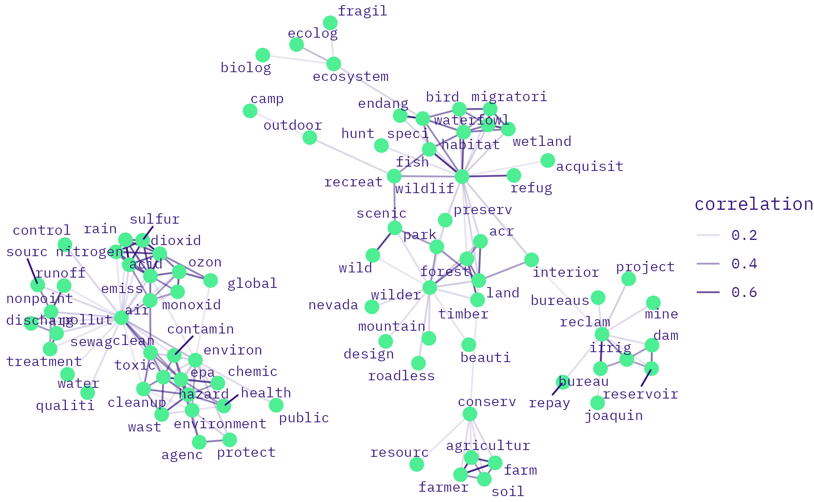
enviro keywords in labor speeches 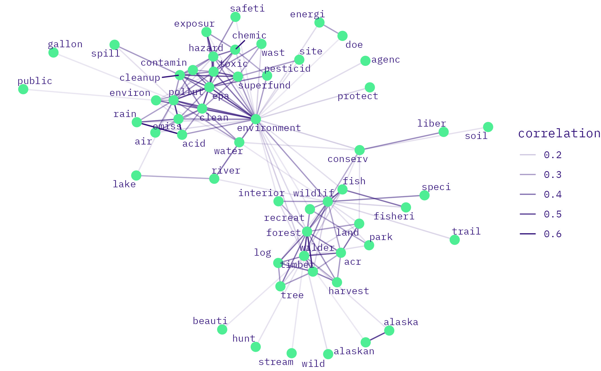
enviro keywords in enviro-labor speeches 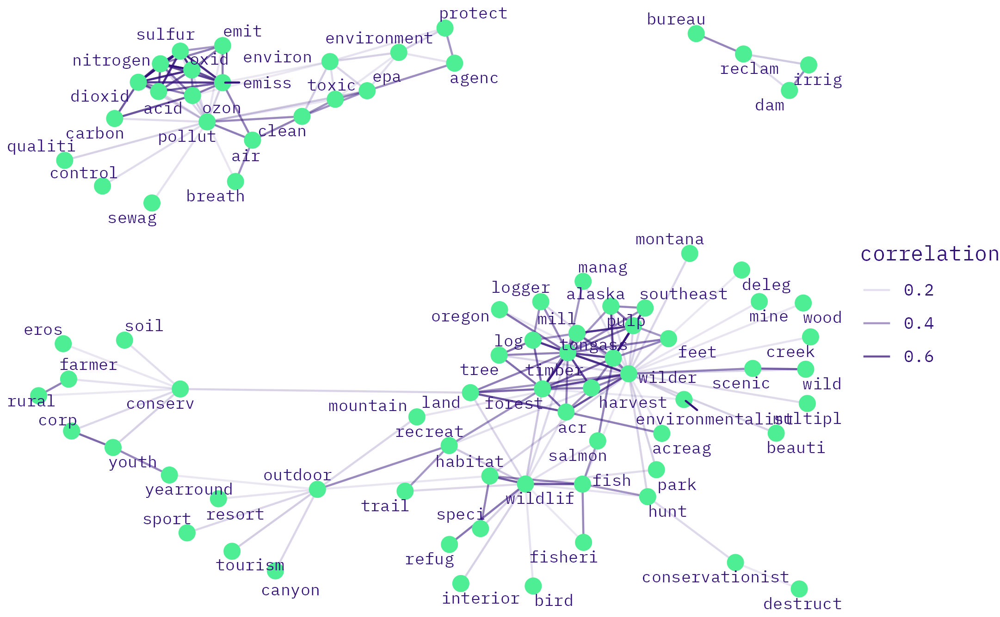
7.3.1.3.2 1990
<>enviro keywords in enviro speeches
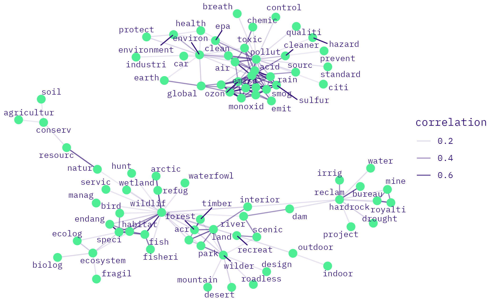
enviro keywords in labor speeches 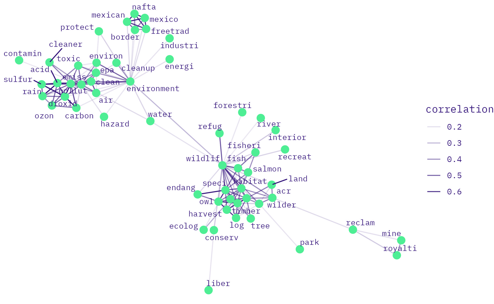
enviro keywords in enviro-labor speeches 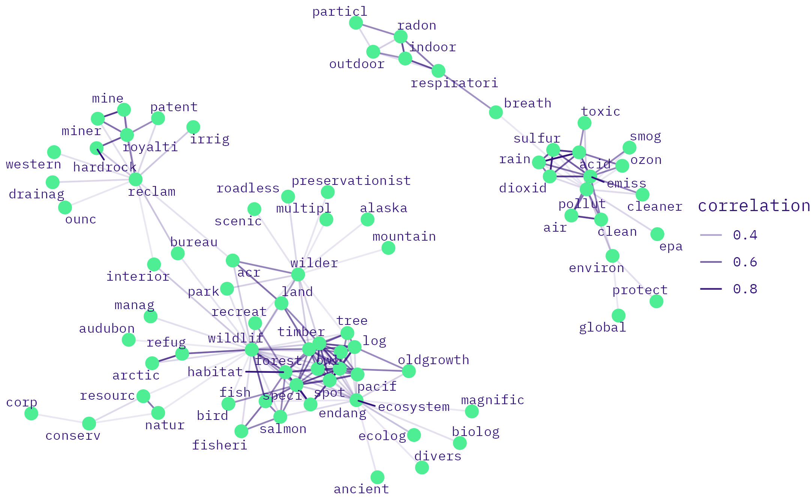
7.3.2 labor
7.3.2.3 co-occurrence
7.3.2.3.1 1985
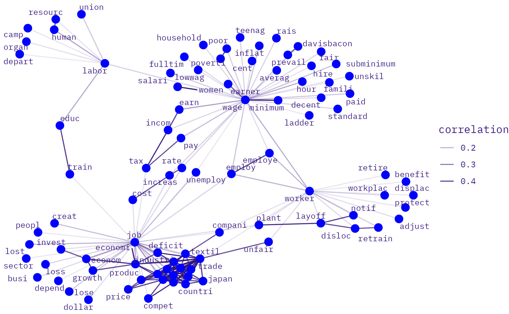
labor keywords in labor speeches
labor keywords in enviro-labor speeches 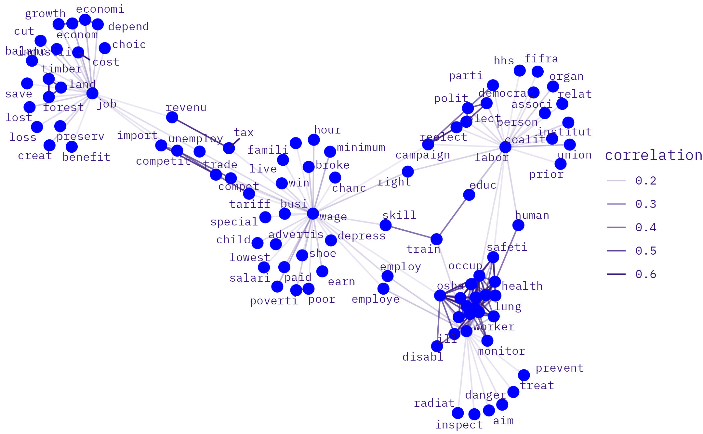
7.3.2.3.2 1990
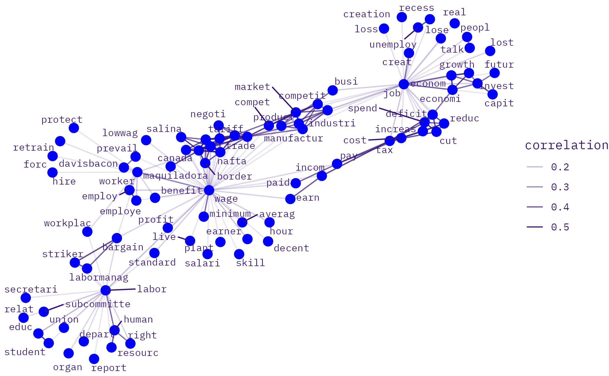
labor keywords in labor speeches
labor keywords in enviro-labor speeches 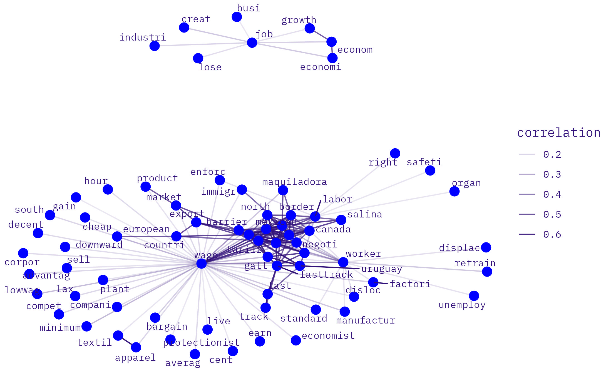
7.3.3 enviroLabor
7.3.3.3 co-occurrence
7.3.3.3.1 1985
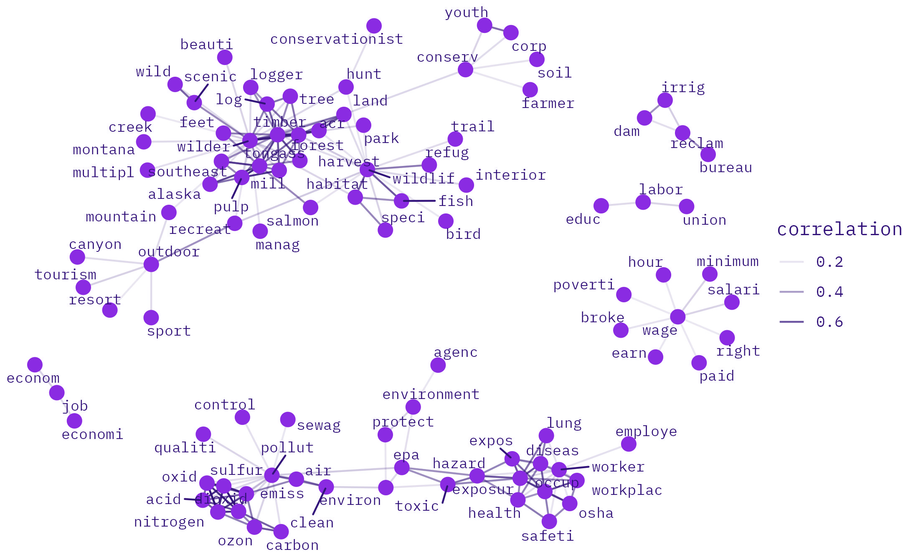
enviroLabor keywords in labor speeches 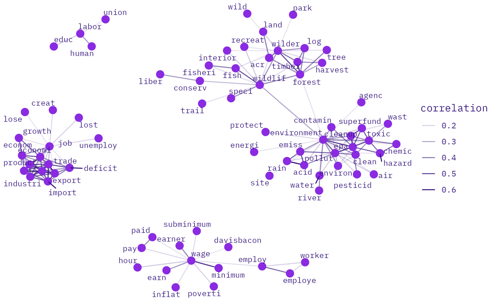
enviroLabor keywords in enviroLabor speeches
7.3.3.3.2 1990
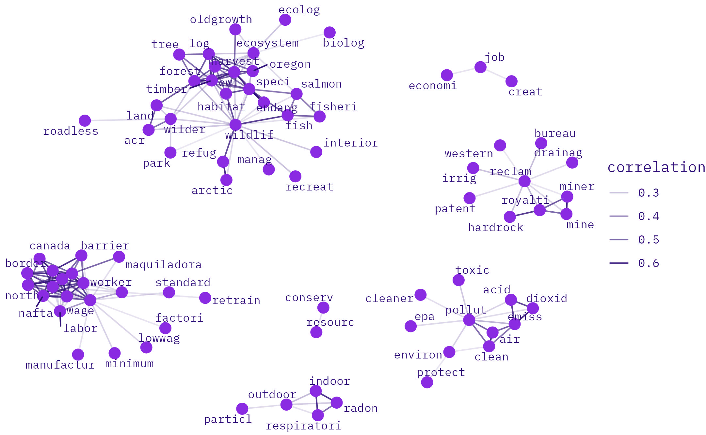
enviroLabor keywords in labor speeches 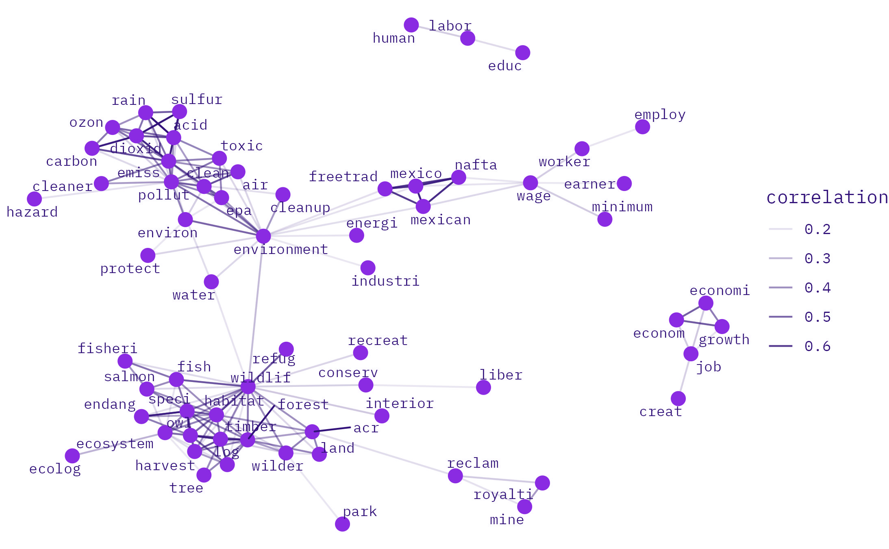
enviroLabor keywords in enviroLabor speeches